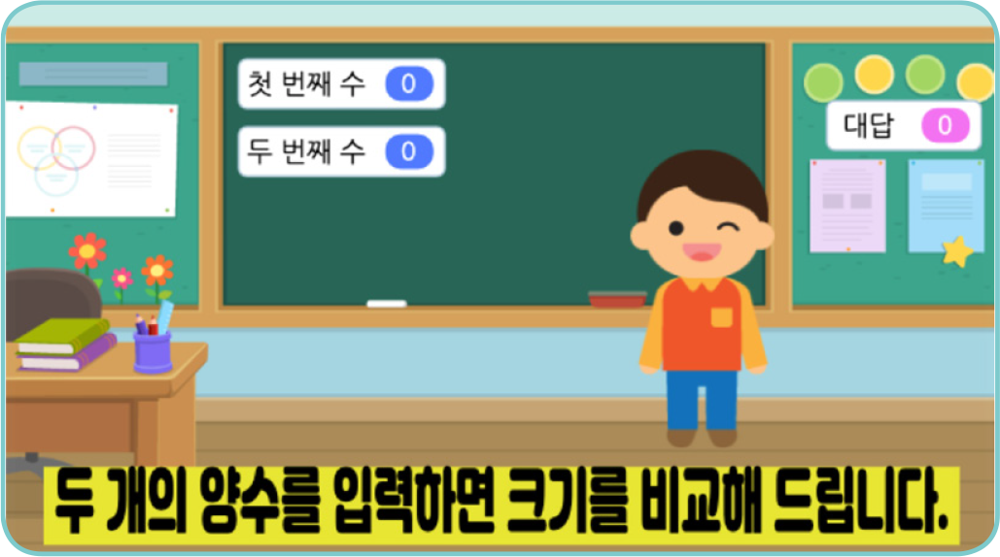
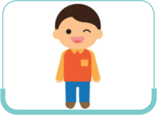
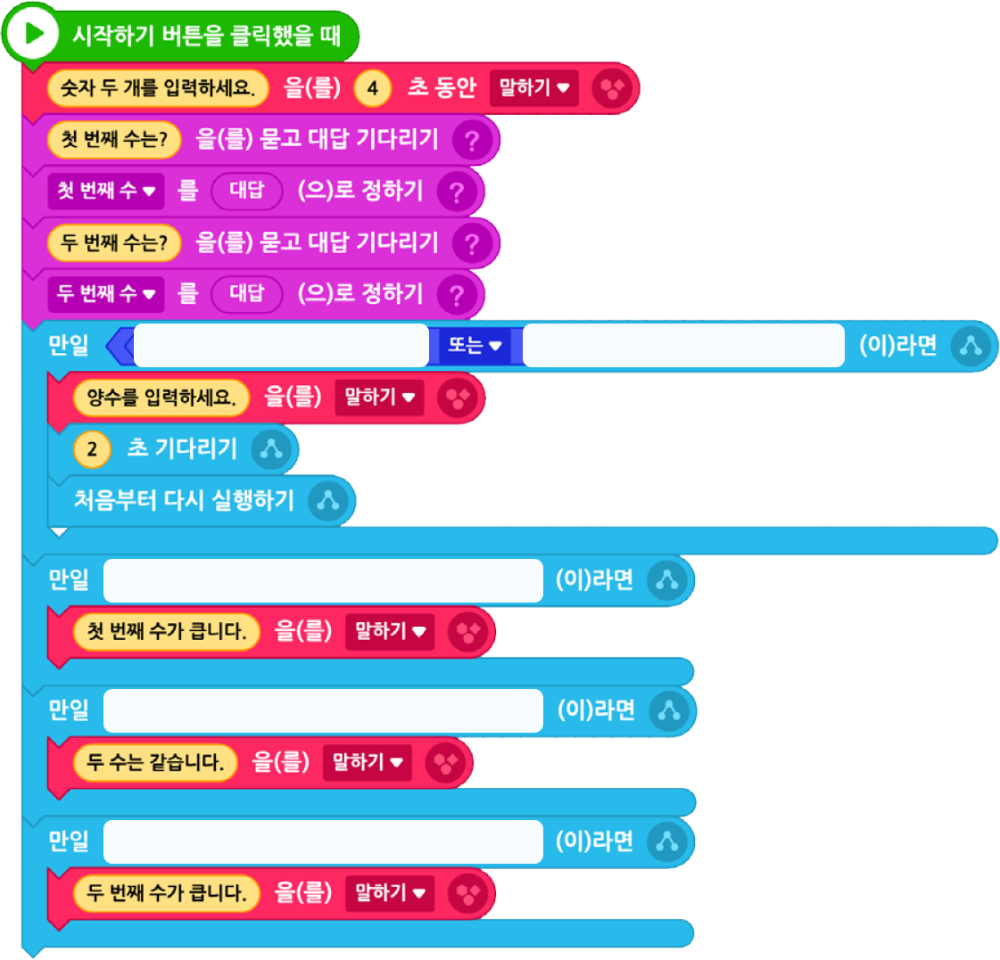

두 개의 양수를 입력받아 두 수의 크기를 비교해 주는 프로그램을 작성해 보자.
실행 화면

- 오브젝트
-
어린이(1)
글상자
교실(2)
- 신호
-
첫 번째 수
두 번째 수
알고리즘
1프로그램이 시작되면 “숫자 두 개를 입력하세요.”라고 말하고, 두 개의 숫자를 입력받는다.
2두 개의 숫자 중 하나라도 양수가 아니면 “양수를 입력하세요.”를 말한다.
3그렇지 않으면 비교 결과를 말한다.
아래 블록을 참고하여 프로그램을 작성해 보자.

어린이(1)

이전
다음